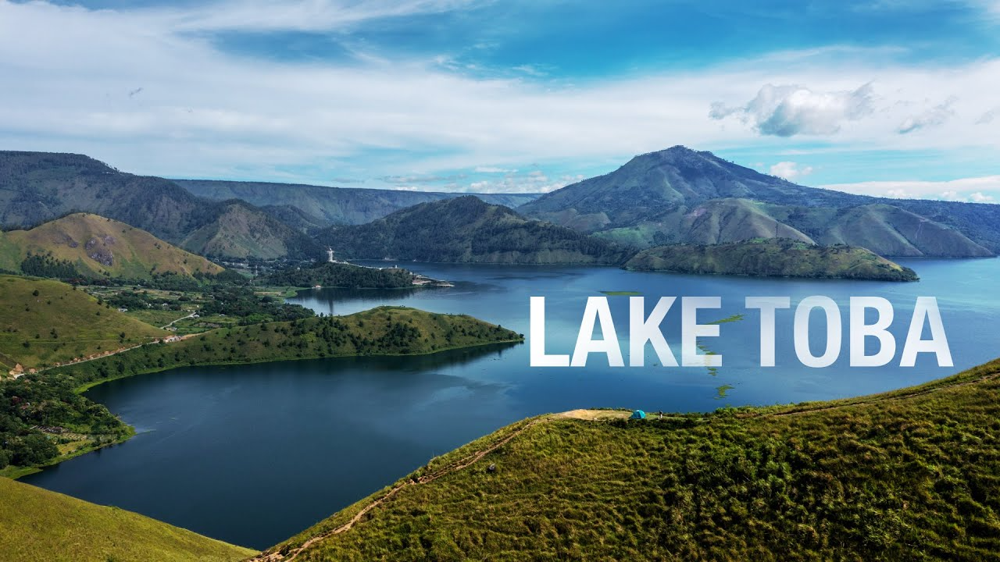
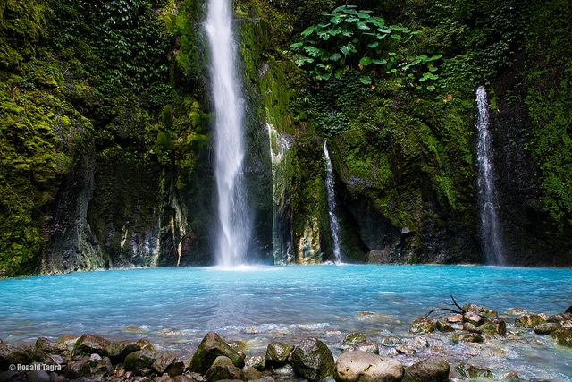
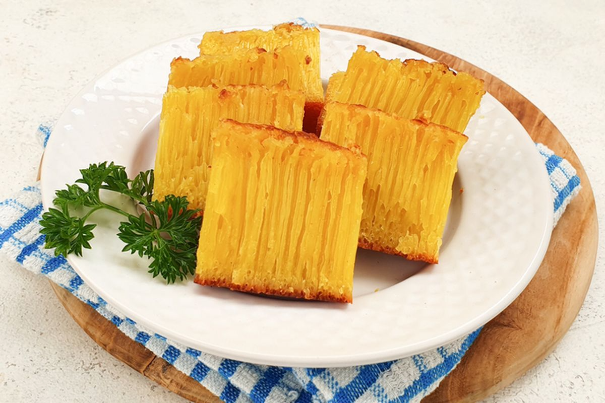
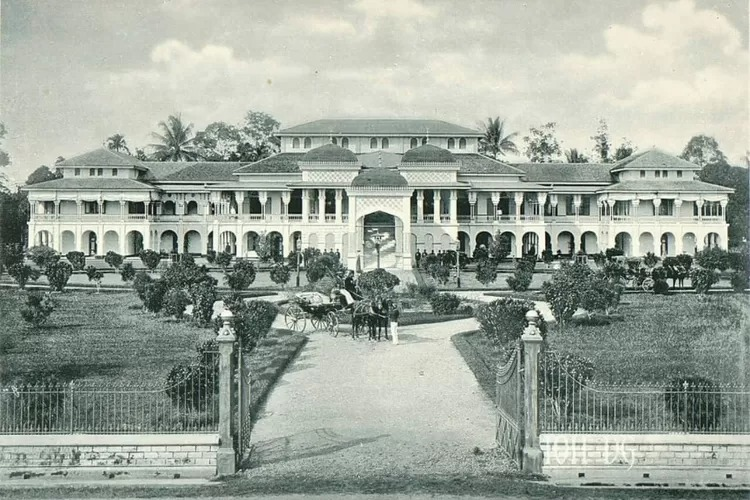
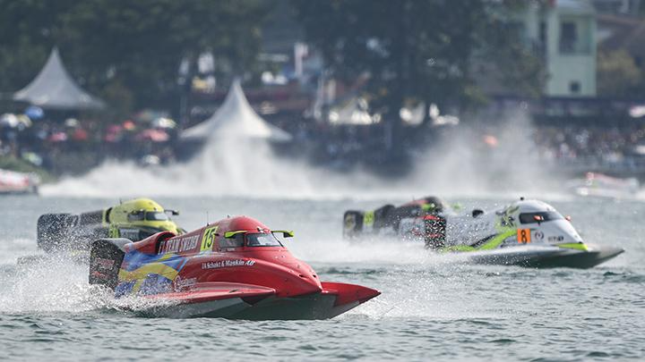
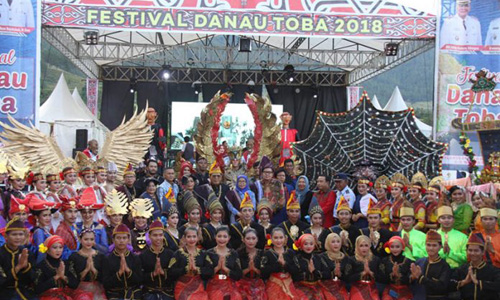

Wisata
Sumatera Utara memiliki banyak destinasi wisata yang menakjubkan.
Dari keindahan alam Danau Toba hingga pesona budaya di Pulau
Samosir, provinsi ini menawarkan pengalaman wisata yang tak
terlupakan.
Danau Toba

Danau vulkanik terbesar di dunia ini terletak di tengah-tengah
pegunungan Sumatera Utara. Dengan luas sekitar 1.145 km², Danau
Toba dikelilingi pemandangan alam yang memukau dan Pulau Samosir
di tengahnya menjadi daya tarik tersendiri.
Air Terjun Sipiso-piso

Terletak di dekat Desa Tongging, air terjun ini memiliki
ketinggian sekitar 120 meter. Sipiso-piso menawarkan pemandangan
yang spektakuler dan udara yang sejuk, menjadi destinasi wajib
bagi para pecinta alam.
Kuliner
Sumatera Utara dikenal dengan ragam kuliner yang kaya akan rempah
dan cita rasa autentik. Berikut beberapa hidangan khas yang wajib
dicoba:
Soto Medan

Soto Medan adalah makanan khas yang memiliki cita rasa gurih dan
kental. Kuahnya berwarna kuning karena menggunakan santan dan
rempah-rempah. Biasanya disajikan dengan nasi, ayam suwir, dan
perkedel.
Bika Ambon

Kue tradisional ini terkenal di seluruh Indonesia. Dengan tekstur
berserat dan rasa manis, Bika Ambon menjadi oleh-oleh khas Medan
yang paling dicari.
Sejarah

Sumatera Utara memiliki sejarah panjang yang mencerminkan
keberagaman budaya dan tradisi. Kawasan ini menjadi pusat peradaban
sejak zaman kerajaan kuno, seperti Kerajaan Aru dan Kerajaan Batak,
hingga masa kolonial Belanda.
Salah satu peristiwa penting adalah pembangunan kota Medan yang
dimulai sebagai desa kecil hingga menjadi pusat perdagangan
strategis pada abad ke-19. Medan juga dikenal dengan Istana Maimun,
peninggalan Kesultanan Deli yang masih berdiri megah hingga kini.
Berita
Pengembangan Pariwisata Danau Toba

Pemerintah Sumatera Utara terus berupaya mengembangkan pariwisata
di kawasan Danau Toba dengan memperbaiki infrastruktur,
meningkatkan fasilitas, dan mempromosikan kawasan ini sebagai
destinasi wisata kelas dunia.
Festival Horas Samosir Fiesta

Festival budaya tahunan ini diadakan di Pulau Samosir, menampilkan
pertunjukan seni dan budaya khas Batak, seperti tarian Tortor dan
musik tradisional Gondang. Festival ini bertujuan melestarikan
budaya dan menarik wisatawan.